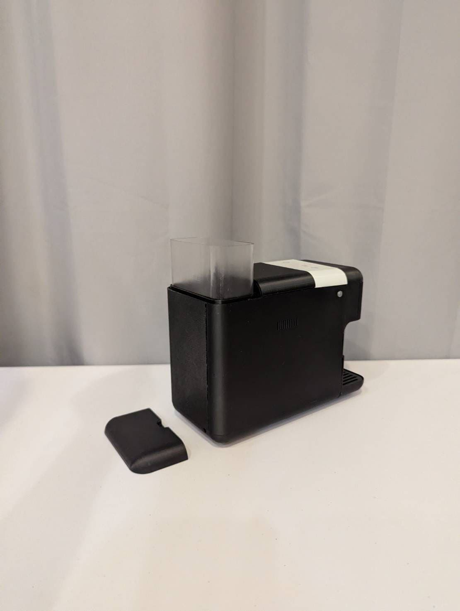
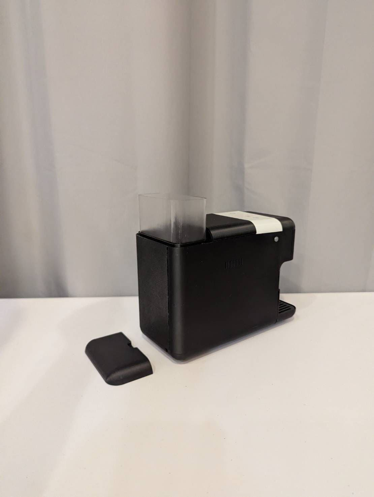

GOOGLE
全自動咖啡機
立體產品／GOOGLE／意式咖啡機
設計理念
本設計以 Google 智慧生活的產品方向為出發點，思考咖啡機在未來居家情境中的使用樣貌。 透過整合自動化與客製化的操作概念，讓沖煮咖啡成為更輕鬆、直覺的日常行為。 外觀造型延續 Google 產品一貫的幾何輪廓與圓潤邊角，降低科技產品的距離感， 使咖啡機能自然融入居家空間，成為智慧生活的一部分。


 

設計背後的思考
在本次專案中，我嘗試將「科技」與「生活感」融合於同一個設計語言之中。咖啡機作為日常中最貼近早晨的物件之一，我希望它不僅是機械性的產品，而能延續 Google 品牌一貫的親切與智慧。
設計過程中，我從使用者的習慣出發，分析他們對於沖煮流程、操作界面與清潔便利性的需求，再藉由幾何語彙與圓潤轉折建立出品牌一致的造型特徵。
在模型製作階段，我特別關注實際比例與細節的可行性，調整了托盤與水箱結構，讓整體造型兼具功能與平衡感。
最終成品希望能呈現「理性與溫度共存」的氛圍——一台能融入居家環境、讓人每天都想使用的咖啡機。這次專案讓我更深刻理解產品設計不只是造型美感，更是體驗與品牌精神的延伸。